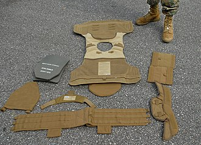

Chalecos antibalas
Los chalecos antibalas usan capas de fibra resistente para capturar y deformar la bala, esparciendo su fuerza sobre una gran superficie del chaleco. El chaleco absorbe la energía del proyectil deformable, deteniéndolo antes de que perfore por completo el chaleco. Algunas capas pueden ser penetradas pero, mientras la bala se deforma, la energía es absorbida por una superficie cada vez mayor. Aunque el chaleco pueda evitar la penetración de la bala, tanto el chaleco y la persona que lo usa absorben la energía del proyectil. Aun sin penetración, las balas de pistola modernas contienen suficiente energía para causar un trauma en la zona de impacto. Las especificaciones del chaleco incluyen la resistencia de penetración y la cantidad de energía que llega al cuerpo de la persona. Los chalecos antibalas ofrecen una pequeña protección contra cuchillos, flechas o balas no deformables; la fuerza del impacto de estos objetos se concentra en un área relativamente pequeña, por lo que puede penetrar las capas del chaleco. Los chalecos pueden incluir capas de metal (como acero o titanio), cerámica o polietileno, que proveen protección extra a las áreas vitales. Estas capas adicionales son efectivas contra todas las pistolas y contra algunos fusiles. Estos agregados son comunes en los chalecos militares, ya que los chalecos normales no son eficaces contra la munición militar. Los guardiacárceles suelen usar chalecos especiales diseñados específicamente contra cuchillos y objetos afilados, incorporando capas de tejidos sintéticos densos o tejidos sintéticos laminados y componentes metálicos.

Volver a la página principal
Ir a Armas no Letales